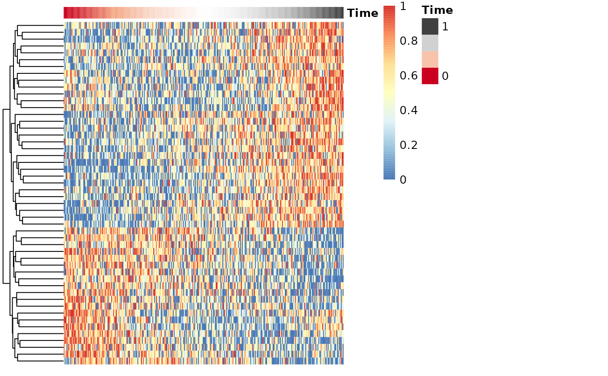
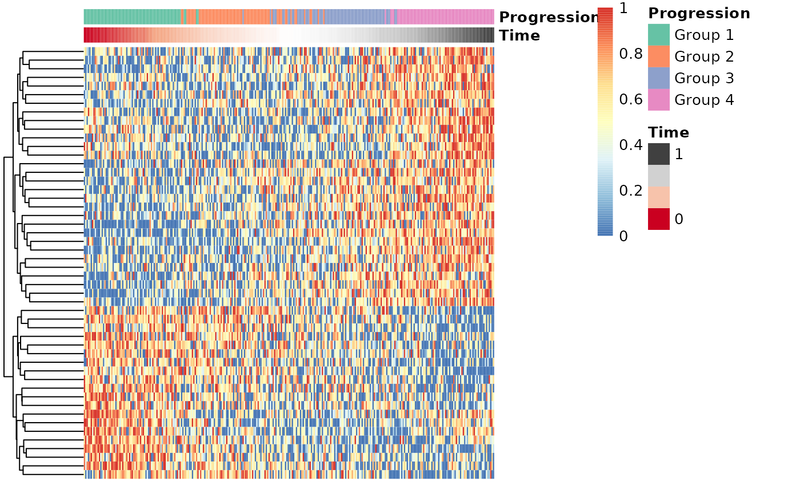
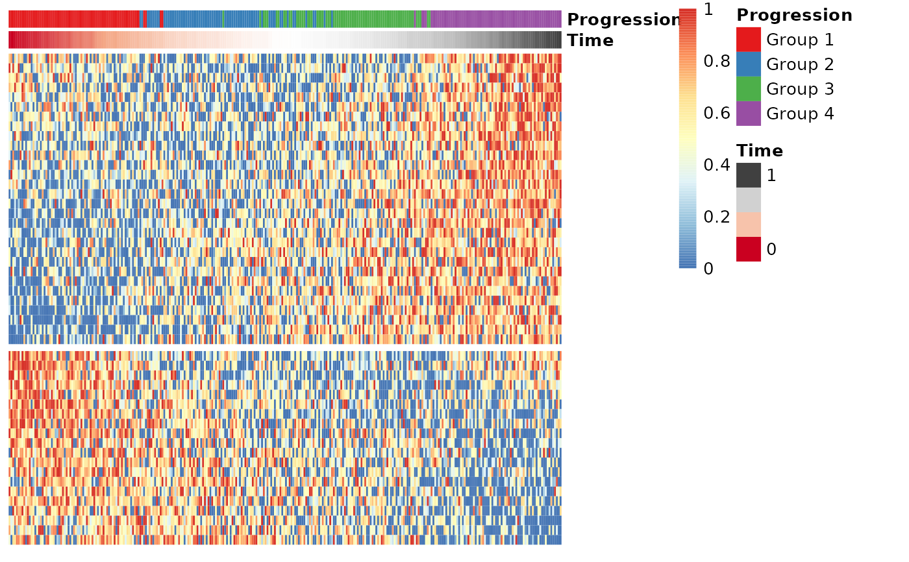
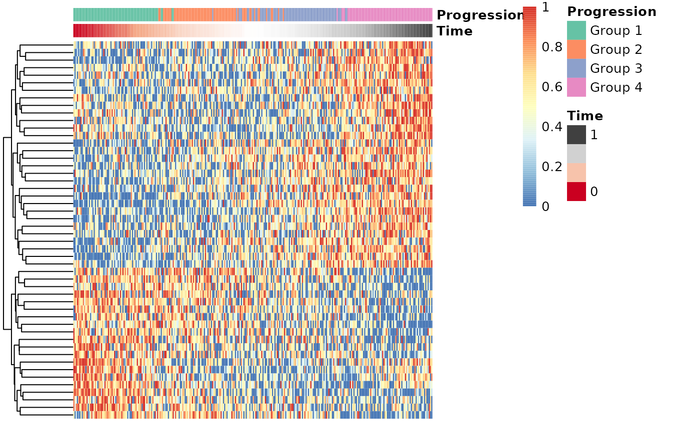
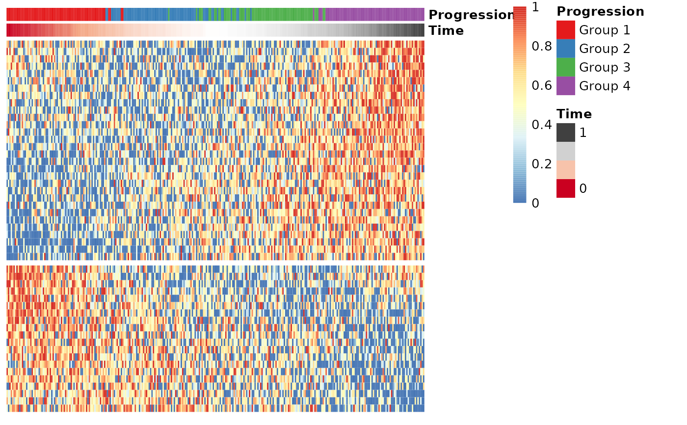

draw_trajectory_heatmap draws a heatmap in which the samples
are ranked according their position in an inferred trajectory. In addition, the progression groups and
feature modules can be passed along to further enhance the visualisation.
Usage
draw_trajectory_heatmap(
x,
time,
progression_group = NULL,
modules = NULL,
show_labels_row = FALSE,
show_labels_col = FALSE,
scale_features = TRUE,
progression_group_palette = NULL,
...
)Arguments
- x
A numeric matrix or a data frame with one row per sample and one column per feature.
- time
A numeric vector containing the inferred time points of each sample along a trajectory.
- progression_group
NULLor a vector (or factor) containing the groupings of the samples (defaultNULL).- modules
NULLor a data frame as returned byextract_modules.- show_labels_row
TRUEif the labels of the rows are to be plotted (defaultFALSE).- show_labels_col
TRUEif the labels of the cols are to be plotted (defaultFALSE).- scale_features
TRUEif the values of each feature is to be scaled (defaultTRUE).- progression_group_palette
A named vector palette for the progression group.
- ...
Optional arguments to
pheatmap
Value
The output of the pheatmap function.
Examples
# \donttest{
## Generate a dataset
dataset <- generate_dataset(num_genes=500, num_samples=300, num_groups=4)
expression <- dataset$expression
space <- reduce_dimensionality(expression, ndim=2)
groups <- dataset$sample_info$group_name
traj <- infer_trajectory(space)
time <- traj$time
gimp <- gene_importances(expression, traj$time, num_permutations = 0, ntree = 10000)
gene_sel <- gimp[1:50,]
expr_sel <- expression[,gene_sel$gene]
## Draw a time series heatmap
draw_trajectory_heatmap(expr_sel, time)

## Also show the progression groupings
draw_trajectory_heatmap(expr_sel, time, progression_group=groups)
 ## Use a different palette
draw_trajectory_heatmap(
expr_sel, time, progression_group=groups,
progression_group_palette = setNames(RColorBrewer::brewer.pal(4, "Set2"), paste0("Group ", 1:4))
)

## Group the genes into modules and visualise the modules in a heatmap
modules <- extract_modules(scale_quantile(expr_sel))
draw_trajectory_heatmap(expr_sel, time, progression_group=groups, modules=modules)

# }
## Use a different palette
draw_trajectory_heatmap(
expr_sel, time, progression_group=groups,
progression_group_palette = setNames(RColorBrewer::brewer.pal(4, "Set2"), paste0("Group ", 1:4))
)

## Group the genes into modules and visualise the modules in a heatmap
modules <- extract_modules(scale_quantile(expr_sel))
draw_trajectory_heatmap(expr_sel, time, progression_group=groups, modules=modules)

# }